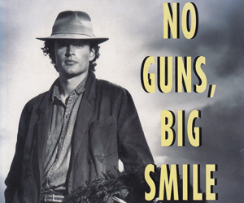

Tracy Piggott | Gordon Roddick | Turlough O'Sullivan | James Greenwood | Caroline Casey

James Greenwood
Completed 4,000 miles of Tschiffely's Ride in 1989
"It was a pleasure to meet Marianne and she cannot begin to comprehend what's round the corner for her. I wish her the very best luck, courage and success with a journey that will inspire her and others she touches.
At a lecture after my trip through South America, somebody asked, 'So what did your learn?' I could not answer. The question was too great. I would urge all those that are considering backing Marianne to commit now."